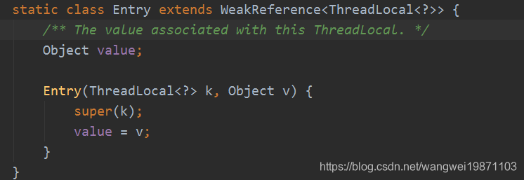
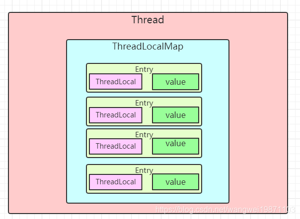
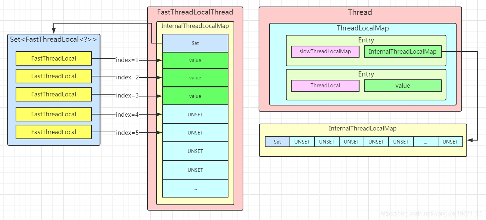
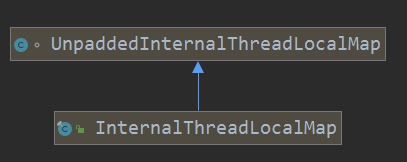
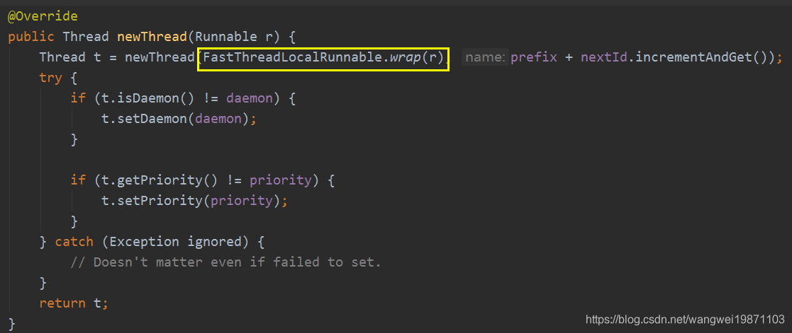
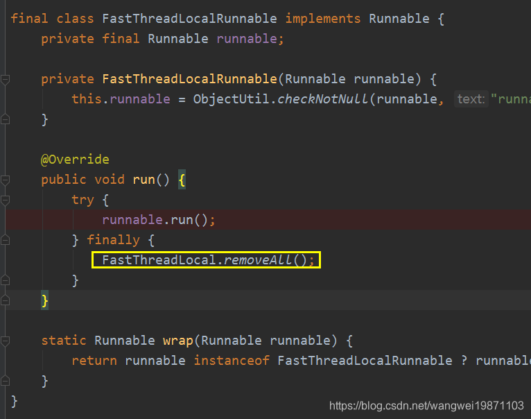

FastThreadLocal简单说就是跟线程相关的数据，每个线程都可以有相同key的不同数据。比如netty想让每个线程对应有自己的内存arena，当然也可以让他们共有一块大内存，但是这样会导致很多多线程竞争的问题，所以能不能设计成让每个线程独有自己的内存，尽量跟别的线程少竞争，提高效率，所以可以用ThreadLocal，但是netty嫌效率不够，因此开发了FastThreadLocal，用空间换时间，提高效率。
怎么提高效率？要搞清楚怎么就能提高效率，怎么个用空间换时间，就得先搞清楚ThreadLocal是怎么来处理的。
Thread内部都有一个ThreadLocalMap属性，内部是一个Entry数组，Entry里面保存着ThreadLocal和对应的值，而且是个弱引用，引用对象就是ThreadLocal，这个可以在gc的时候回收ThreadLocal，然后调用相应的方法再对值和Entry进行回收：

这里比较耗时的地方就是，在放入ThreadLocalMap的时候，用的是hash算法，然后对数组取模算出索引，但是这样可能会冲突，解决冲突的方式叫线性探测法，就是看冲突索引的下一个能不能放，不能就继续往后找，不够就扩容，直到能放下为止。所以一次放的操作就可能消耗很大了。

直接就给每个线程设置一个InternalThreadLocalMap，不管是FastThreadLocalThread直接设置，还是JDK的普通线程Thread，设置进ThreadLocalMap间接设置。InternalThreadLocalMap内部维护着一个对象数组和索引，要放进去直接将值放进对象数组，返回一个索引，记录在FastThreadLocal中，取的时候直接拿这个索引去对象数组里取，非常方便。但是这样的一个缺点就是内存消耗比较大，因为只会扩容，而且索引只会递增，这样数组就会越来越大。所以就是空间换时间了。

这个定义了一些跟线程独有的属性，slowThreadLocalMap 其实就是用了原始的ThreadLocal，但是存的是InternalThreadLocalMap，就是普通线程用FastThreadLocal的时候先创建一个InternalThreadLocalMap放入，然后后面就可以取来用了，这个过程当然比FastThreadLocalThread直接获取InternalThreadLocalMap慢啦。
x1class UnpaddedInternalThreadLocalMap {2 //从ThreadLocal中获取InternalThreadLocalMap3 static final ThreadLocal<InternalThreadLocalMap> slowThreadLocalMap = new ThreadLocal<InternalThreadLocalMap>();4 //索引5 static final AtomicInteger nextIndex = new AtomicInteger();6
7 //放对象的数组8 /** Used by {@link FastThreadLocal} */9 Object[] indexedVariables;10 11 //未来监听器栈的深度12 // Core thread-locals13 int futureListenerStackDepth;14 //本地通道读的栈深度15 int localChannelReaderStackDepth;16 //处理器共享缓存17 Map<Class<?>, Boolean> handlerSharableCache;18 IntegerHolder counterHashCode;19 ThreadLocalRandom random;//20 //参数类型匹配缓存21 Map<Class<?>, TypeParameterMatcher> typeParameterMatcherGetCache;22 //参数类型匹配寻找缓存23 Map<Class<?>, Map<String, TypeParameterMatcher>> typeParameterMatcherFindCache;24
25 // String-related thread-locals26 StringBuilder stringBuilder;27 //编码器缓存28 Map<Charset, CharsetEncoder> charsetEncoderCache;29 //解码器缓存30 Map<Charset, CharsetDecoder> charsetDecoderCache;31
32 // ArrayList-related thread-locals33 ArrayList<Object> arrayList;34
35 UnpaddedInternalThreadLocalMap(Object[] indexedVariables) {36 this.indexedVariables = indexedVariables;37 }38} 承了上面那个，但是提供了一系列的操作。功能类似于普通线程的ThreadLocalMap，效率高。

直接创建32个空对象的数组。
121private InternalThreadLocalMap() {2 super(newIndexedVariableTable());3}4
5private static Object[] newIndexedVariableTable() {6 Object[] array = new Object[32];7 Arrays.fill(array, UNSET);8 return array;9}10UnpaddedInternalThreadLocalMap(Object[] indexedVariables) {11 this.indexedVariables = indexedVariables;12} 获取当前线程，如果是FastThreadLocalThread就直接获取InternalThreadLocalMap，如果不是就用ThreadLocal获取，获取不到就返回null。
91public static InternalThreadLocalMap getIfSet() {2 Thread thread = Thread.currentThread();3 if (thread instanceof FastThreadLocalThread) {4 //快速获取5 return ((FastThreadLocalThread) thread).threadLocalMap();6 }7 //常规获取8 return slowThreadLocalMap.get();9} get获取InternalThreadLocalMap ，如果获取不到就创建一个，如果是FastThreadLocalThread就用快速的方法，否则就慢的方法。
81public static InternalThreadLocalMap get() {2 Thread thread = Thread.currentThread();3 if (thread instanceof FastThreadLocalThread) {4 return fastGet((FastThreadLocalThread) thread);5 } else {6 return slowGet();7 }8}快方法就是直接获取，获取不到就创建一个设置进去，返回。
71private static InternalThreadLocalMap fastGet(FastThreadLocalThread thread) {2 InternalThreadLocalMap threadLocalMap = thread.threadLocalMap();3 if (threadLocalMap == null) {4 thread.setThreadLocalMap(threadLocalMap = new InternalThreadLocalMap());5 }6 return threadLocalMap;7} 从ThreadLocal中获取，不存在就创建一个，再设置进去，里面可能涉及一堆hash算法，冲突解决，扩容，所以相对就慢啦。
91private static InternalThreadLocalMap slowGet() {2 ThreadLocal<InternalThreadLocalMap> slowThreadLocalMap = UnpaddedInternalThreadLocalMap.slowThreadLocalMap;3 InternalThreadLocalMap ret = slowThreadLocalMap.get();4 if (ret == null) {5 ret = new InternalThreadLocalMap();6 slowThreadLocalMap.set(ret);7 }8 return ret;9} 获取索引值，FastThreadLocal构造的时候需要，因为有索引值才可以从数组中获取值啊。
81public static int nextVariableIndex() {2 int index = nextIndex.getAndIncrement();//获取后自增3 if (index < 0) {//溢出就抛异常了，那也太多了4 nextIndex.decrementAndGet();5 throw new IllegalStateException("too many thread-local indexed variables");6 }7 return index;8} 获取索引对应的值，如果超边界就返回UNSET，表示没设置过值。
41public Object indexedVariable(int index) {2 Object[] lookup = indexedVariables;3 return index < lookup.length? lookup[index] : UNSET;4} 设置索引和对应的值，如果在范围内，就替换旧值，返回旧值是否是UNSET，是就表示第一次设置，返回true，不是就表示更新，返回false。超出范围就扩容。
111public boolean setIndexedVariable(int index, Object value) {2 Object[] lookup = indexedVariables;3 if (index < lookup.length) {4 Object oldValue = lookup[index];5 lookup[index] = value;6 return oldValue == UNSET;7 } else {8 expandIndexedVariableTableAndSet(index, value);9 return true;10 }11} 扩容到大于index的最小的2的幂次，比如index=32，扩容到64，然后把老的数组拷贝到新的数组里去，不满的地方用UNSET填满。
161private void expandIndexedVariableTableAndSet(int index, Object value) {2 Object[] oldArray = indexedVariables;3 final int oldCapacity = oldArray.length;4 int newCapacity = index;5 newCapacity |= newCapacity >>> 1;6 newCapacity |= newCapacity >>> 2;7 newCapacity |= newCapacity >>> 4;8 newCapacity |= newCapacity >>> 8;9 newCapacity |= newCapacity >>> 16;10 newCapacity ++;11
12 Object[] newArray = Arrays.copyOf(oldArray, newCapacity);13 Arrays.fill(newArray, oldCapacity, newArray.length, UNSET);14 newArray[index] = value;15 indexedVariables = newArray;16 } 删除数组中的值并返回，其实就是用UNSET替换了。溢出就返回UNSET。
101public Object removeIndexedVariable(int index) {2 Object[] lookup = indexedVariables;3 if (index < lookup.length) {4 Object v = lookup[index];5 lookup[index] = UNSET;6 return v;7 } else {8 return UNSET;9 }10}该数组在索引是否有设置了值。
41public boolean isIndexedVariableSet(int index) {2 Object[] lookup = indexedVariables;3 return index < lookup.length && lookup[index] != UNSET;4}把线程本地变量的删除，避免内存泄露。
81public static void remove() {2 Thread thread = Thread.currentThread();3 if (thread instanceof FastThreadLocalThread) {4 ((FastThreadLocalThread) thread).setThreadLocalMap(null);5 } else {6 slowThreadLocalMap.remove();7 }8} ThreadLocal的删除，避免内存泄露。
31public static void destroy() {2 slowThreadLocalMap.remove();3} 获取InternalThreadLocalMap已经设置了多少有用对象，不包括UNSET，还数组中的第0个元素set集合，除了对象数组indexedVariables外，还可能会有其他的属性。
471public int size() {2 int count = 0;3
4 if (futureListenerStackDepth != 0) {5 count ++;6 }7 if (localChannelReaderStackDepth != 0) {8 count ++;9 }10 if (handlerSharableCache != null) {11 count ++;12 }13 if (counterHashCode != null) {14 count ++;15 }16 if (random != null) {17 count ++;18 }19 if (typeParameterMatcherGetCache != null) {20 count ++;21 }22 if (typeParameterMatcherFindCache != null) {23 count ++;24 }25 if (stringBuilder != null) {26 count ++;27 }28 if (charsetEncoderCache != null) {29 count ++;30 }31 if (charsetDecoderCache != null) {32 count ++;33 }34 if (arrayList != null) {35 count ++;36 }37
38 for (Object o: indexedVariables) {39 if (o != UNSET) {40 count ++;41 }42 }43
44 // We should subtract 1 from the count because the first element in 'indexedVariables' is reserved45 // by 'FastThreadLocal' to keep the list of 'FastThreadLocal's to remove on 'FastThreadLocal.removeAll()'. set集合为了保证FastThreadLocal能调用removeAll删除所有的removeAll46 return count - 1;//第一个是set集合，不算47} 类似ThreadLocal这个里面同样有很多操作，但是基本都是基于InternalThreadLocalMap的。
首先初始化的时候会获取一个索引，默认是0，也是将自己放在InternalThreadLocalMap的数组indexedVariables里的，是将来用于删除的。所以正常存储数据的索引是从1开始的。
11private static final int variablesToRemoveIndex = InternalThreadLocalMap.nextVariableIndex(); 有个index属性，就是对应的索引值，构造方法的时候就会给索引赋值，而且第一个索引是1，后面都是根据这个索引来进行存取数据的。
51private final int index;2
3public FastThreadLocal() {4 index = InternalThreadLocalMap.nextVariableIndex();5} 如果值不是UNSET，就获取InternalThreadLocalMap ，然后setKnownNotUnset设置，否则就remove删除。
81public final void set(V value) {2 if (value != InternalThreadLocalMap.UNSET) {3 InternalThreadLocalMap threadLocalMap = InternalThreadLocalMap.get();4 setKnownNotUnset(threadLocalMap, value);5 } else {6 remove();7 }8} 将索引和值设置进threadLocalMap里，返回true表示第一次设置，调用addToVariablesToRemove将FastThreadLocal添加到删除集合里。
51private void setKnownNotUnset(InternalThreadLocalMap threadLocalMap, V value) {2 if (threadLocalMap.setIndexedVariable(index, value)) {//新添加的，而不是更新3 addToVariablesToRemove(threadLocalMap, this);//需要添加到删除的set里4 }5} 获取删除集合，如果不存在就根据IdentityHashMap创建一个set集合，IdentityHashMap只根据引用地址判断时是不是同一个。然后将set集合放入threadLocalMap数组的0索引位置，将FastThreadLocal放进set集合。
121private static void addToVariablesToRemove(InternalThreadLocalMap threadLocalMap, FastThreadLocal<?> variable) {2 Object v = threadLocalMap.indexedVariable(variablesToRemoveIndex);//获取删除set集合3 Set<FastThreadLocal<?>> variablesToRemove;//定义set集合4 if (v == InternalThreadLocalMap.UNSET || v == null) {//如果set为空的话，就根据map创建一个5 variablesToRemove = Collections.newSetFromMap(new IdentityHashMap<FastThreadLocal<?>, Boolean>());6 threadLocalMap.setIndexedVariable(variablesToRemoveIndex, variablesToRemove);//将set添加到threadLocalMap里7 } else {8 variablesToRemove = (Set<FastThreadLocal<?>>) v;9 }10
11 variablesToRemove.add(variable);//将FastThreadLocal添加到set集合12} 删除尝试获取的InternalThreadLocalMap。
31public final void remove() {2 remove(InternalThreadLocalMap.getIfSet());3} 将当前FastThreadLocal对象从set集合里删除，并把数组位置上的对象删除，设置回UNSET。这里的onRemoval不一定会执行。
161public final void remove(InternalThreadLocalMap threadLocalMap) {2 if (threadLocalMap == null) {3 return;4 }5
6 Object v = threadLocalMap.removeIndexedVariable(index);//获取删除的对象，也可能是UNSET7 removeFromVariablesToRemove(threadLocalMap, this);//从set集合中删除当前FastThreadLocal8
9 if (v != InternalThreadLocalMap.UNSET) {//不是UNSET才处理10 try {11 onRemoval((V) v);//不一定能触发的方法，空实现12 } catch (Exception e) {13 PlatformDependent.throwException(e);14 }15 }16} 将当前的FastThreadLocal从set里删除。
131private static void removeFromVariablesToRemove(2 InternalThreadLocalMap threadLocalMap, FastThreadLocal<?> variable) {3
4 Object v = threadLocalMap.indexedVariable(variablesToRemoveIndex);//获取set集合5
6 if (v == InternalThreadLocalMap.UNSET || v == null) {//还没初始化7 return;8 }9
10 ("unchecked")11 Set<FastThreadLocal<?>> variablesToRemove = (Set<FastThreadLocal<?>>) v;12 variablesToRemove.remove(variable);//从set中删除13} 根据index获取InternalThreadLocalMap ，获取值，如果不是UNSET就返回，否则返回初始化的值，默认null。
91public final V get() {2 InternalThreadLocalMap threadLocalMap = InternalThreadLocalMap.get();3 Object v = threadLocalMap.indexedVariable(index);4 if (v != InternalThreadLocalMap.UNSET) {5 return (V) v;6 }7
8 return initialize(threadLocalMap);9} 设置初始值然后放进threadLocalMap，添加FastThreadLocal到set集合中。
151private V initialize(InternalThreadLocalMap threadLocalMap) {2 V v = null;3 try {4 v = initialValue();//默认null5 } catch (Exception e) {6 PlatformDependent.throwException(e);7 }8
9 threadLocalMap.setIndexedVariable(index, v);10 addToVariablesToRemove(threadLocalMap, this);11 return v;12}13protected V initialValue() throws Exception {14 return null;15} 调用InternalThreadLocalMap的getIfSet获取threadLocalMap ，如果获取到了并且值不为UNSET就返回index对应的值，否则就null。因为初始化的时候值都是UNSET，如果没有设置过就获取，得到的就是UNSET，所以也要返回null。
101public final V getIfExists() {2 InternalThreadLocalMap threadLocalMap = InternalThreadLocalMap.getIfSet();3 if (threadLocalMap != null) {4 Object v = threadLocalMap.indexedVariable(index);5 if (v != InternalThreadLocalMap.UNSET) {6 return (V) v;7 }8 }9 return null;10} 非FastThreadLocalThread线程的时候要调用，把不用得ThreadLocal删除，不然可能内存泄露了。
31public static void destroy() {2 InternalThreadLocalMap.destroy();3} 在其它容器环境中，可以将FastThreadLocal全部删除。
211public static void removeAll() {2 InternalThreadLocalMap threadLocalMap = InternalThreadLocalMap.getIfSet();3 if (threadLocalMap == null) {4 return;5 }6
7 try {8 Object v = threadLocalMap.indexedVariable(variablesToRemoveIndex);//获取set集合9 if (v != null && v != InternalThreadLocalMap.UNSET) {10 ("unchecked")11 Set<FastThreadLocal<?>> variablesToRemove = (Set<FastThreadLocal<?>>) v;12 FastThreadLocal<?>[] variablesToRemoveArray =13 variablesToRemove.toArray(new FastThreadLocal[0]);//将set转换成数组14 for (FastThreadLocal<?> tlv: variablesToRemoveArray) {15 tlv.remove(threadLocalMap);//每个FastThreadLocal都删除16 }17 }18 } finally {19 InternalThreadLocalMap.remove();//将InternalThreadLocalMap删除20 }21} 这个removeAll还时候很有用的，可以在线程执行完了的时候调用，把里面的线程本地变量都释放了。比如下面这个，其实netty的线程工厂里的线程任务都是用FastThreadLocalRunnable包装起来的：


就是创建的时候如果有Runnable任务传进来，就可以被包装成FastThreadLocalRunnable，在完成任务后可以释放所有FastThreadLocal：
781public class FastThreadLocalThread extends Thread {2 // This will be set to true if we have a chance to wrap the Runnable.3 private final boolean cleanupFastThreadLocals;//是否对Runnable包装成FastThreadLocalRunnable4
5 private InternalThreadLocalMap threadLocalMap;6
7 public FastThreadLocalThread() {8 cleanupFastThreadLocals = false;9 }10
11 public FastThreadLocalThread(Runnable target) {12 super(FastThreadLocalRunnable.wrap(target));13 cleanupFastThreadLocals = true;14 }15
16 public FastThreadLocalThread(ThreadGroup group, Runnable target) {17 super(group, FastThreadLocalRunnable.wrap(target));18 cleanupFastThreadLocals = true;19 }20
21 public FastThreadLocalThread(String name) {22 super(name);23 cleanupFastThreadLocals = false;24 }25
26 public FastThreadLocalThread(ThreadGroup group, String name) {27 super(group, name);28 cleanupFastThreadLocals = false;29 }30
31 public FastThreadLocalThread(Runnable target, String name) {32 super(FastThreadLocalRunnable.wrap(target), name);33 cleanupFastThreadLocals = true;34 }35
36 public FastThreadLocalThread(ThreadGroup group, Runnable target, String name) {37 super(group, FastThreadLocalRunnable.wrap(target), name);38 cleanupFastThreadLocals = true;39 }40
41 public FastThreadLocalThread(ThreadGroup group, Runnable target, String name, long stackSize) {42 super(group, FastThreadLocalRunnable.wrap(target), name, stackSize);43 cleanupFastThreadLocals = true;44 }45
46 /**47 * Returns the internal data structure that keeps the thread-local variables bound to this thread.48 * Note that this method is for internal use only, and thus is subject to change at any time.49 */50 public final InternalThreadLocalMap threadLocalMap() {51 return threadLocalMap;52 }53
54 /**55 * Sets the internal data structure that keeps the thread-local variables bound to this thread.56 * Note that this method is for internal use only, and thus is subject to change at any time.57 */58 public final void setThreadLocalMap(InternalThreadLocalMap threadLocalMap) {59 this.threadLocalMap = threadLocalMap;60 }61
62 /**63 * Returns {@code true} if {@link FastThreadLocal#removeAll()} will be called once {@link #run()} completes.64 */65 66 public boolean willCleanupFastThreadLocals() {67 return cleanupFastThreadLocals;68 }69
70 /** 是否在任务完成时会进行removeAll71 * Returns {@code true} if {@link FastThreadLocal#removeAll()} will be called once {@link Thread#run()} completes.72 */73 74 public static boolean willCleanupFastThreadLocals(Thread thread) {75 return thread instanceof FastThreadLocalThread &&76 ((FastThreadLocalThread) thread).willCleanupFastThreadLocals();77 }78}